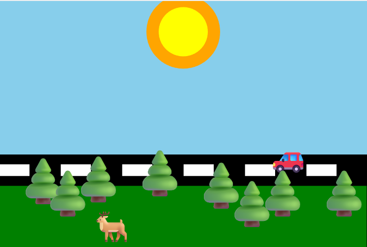
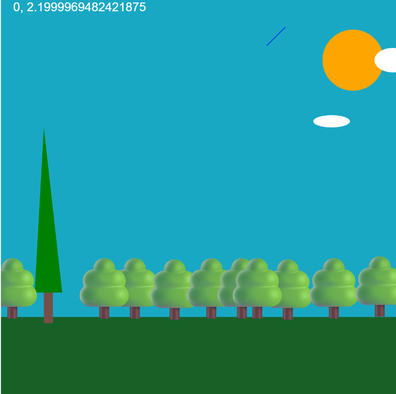
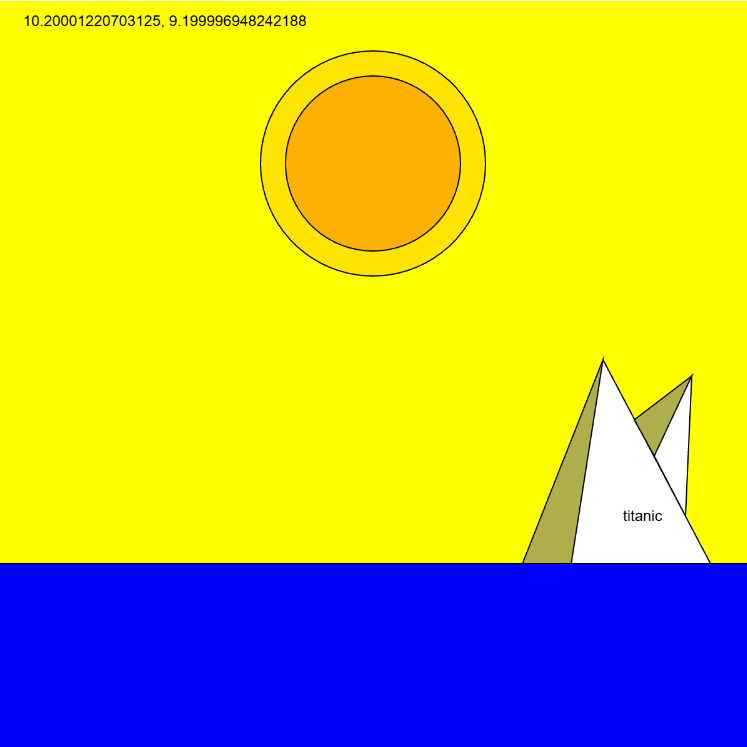
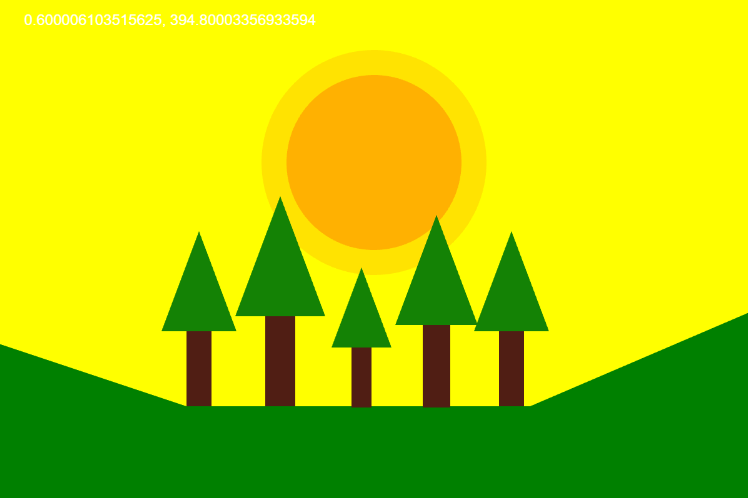
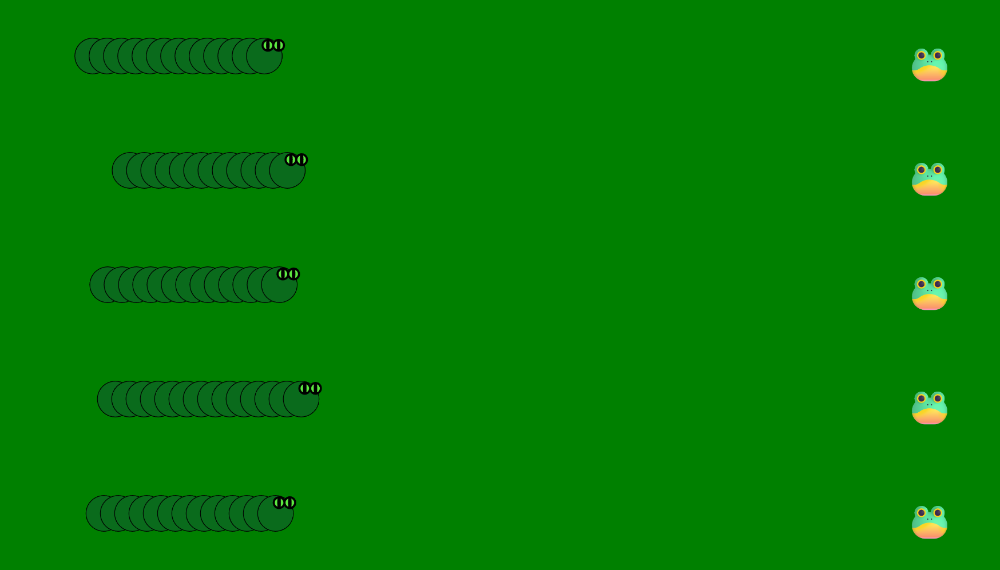
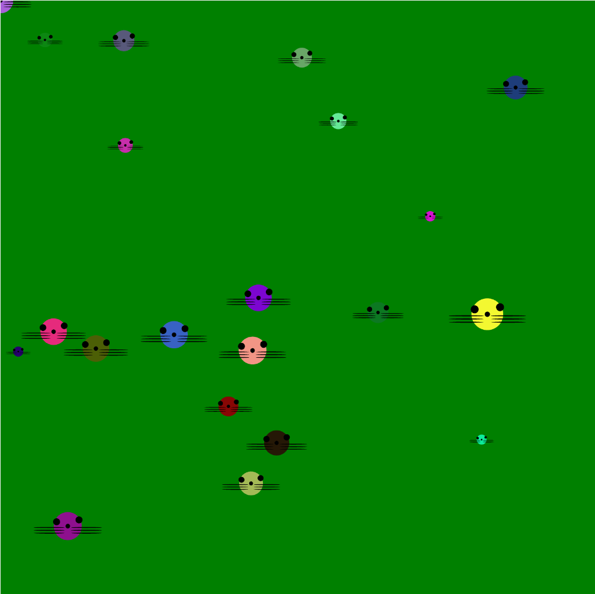

Dit ben ik:
Ik ben een beginnende software developer. Ik zou mezelf omschrijven als een rustig en aardig persoon.
Mavo diploma
C1 engels diploma bij cambridge
Op dit moment bezig voor een diploma bij mediacollege
- HTML
- CSS
- JavaScript
- Unity engine
- C#
- Engels
Get started

Hier begint het coderen met p5.js door de commands te gebruiken
hier is een link naar de code via github
Variables and changes

Er wordt nu meer complexe commands gebruikt
hier is een link naar de code via github
Conditionals and interactivity

Hier werden er door variabelen een bewegende zon gecreerd
hier is een link naar de code via github
Organising code with functions

Dit was dezelfde opdracht als Conditionals And Interactivity, maar werden er functies gebruikt om het beter er uit te laten zien
hier is een link naar de code via github
Repeating with loops

Hier werdt er geleerd hoe loops werken
hier is een link naar de code via github
Data structure garden

Er werdt laten zien hoe je er voor kan zorgen met functies en loops hoe je een steeds voorkomende plaatjes kan creeren
hier is een link naar de code via github